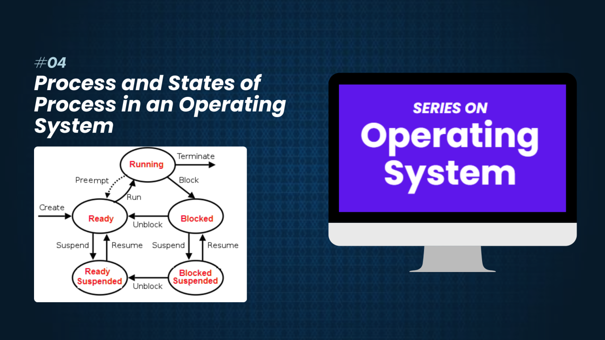
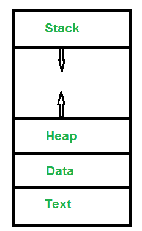
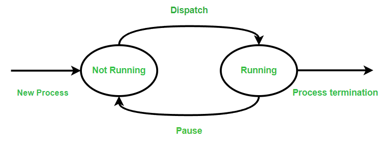
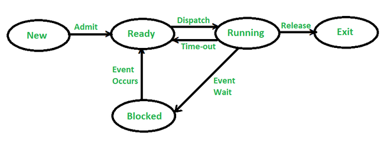
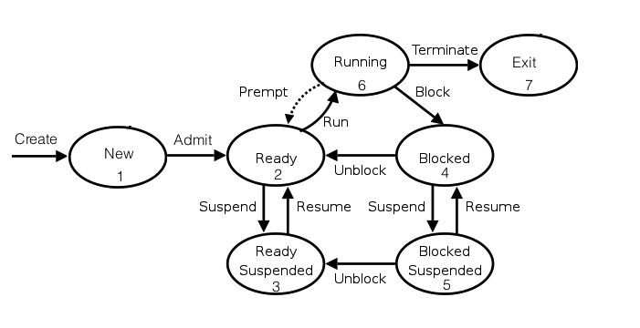

Process and States of Process in an Operating System
Ashmita Pandey · · Operating Systems

Hi everyone, I'm Ashmita 👋
Understanding how operating systems manage running programs is fundamental to designing reliable and efficient software. At the heart of this functionality lies the concept of Processes. In this article, we will explore what a process is, how it operates in memory, and the different states it goes through during execution.
What is a Process?
A process is a program in execution. While a program is a passive set of instructions, a process is an active instance of these instructions being executed.
Real-World Example:
Imagine a music player application installed on your computer. When you click on it to play a song, the operating system loads the application into memory and starts execution. That running instance is a process. If you open the same music player again, a new process is created. So, one program can run multiple processes simultaneously.
Another example is opening a web browser like Chrome multiple times. Each tab or window operates as a separate process to isolate tasks and enhance performance.
Memory Layout of a Process
When a process is loaded into memory, it is divided into several distinct sections, each serving a specialized function during execution. These memory sections interact in real-time as the process progresses.
- Text Section: Contains the compiled code of the program that is to be executed. It is usually marked as read-only to prevent accidental modification of instructions.
- Stack: Used for static memory allocation. It stores temporary data such as function parameters, return addresses, and local variables. It grows and shrinks as functions are called and return.
- Data Section: Holds global and static variables that are initialized by the programmer. It is a fixed-size region allocated when the process starts.
- Heap: Used for dynamic memory allocation. The size of this segment can change during execution as the process requests memory using functions like malloc() in C or new in Java.
Visual Breakdown of Memory Layout:
Here is a top-to-bottom representation of how a process is typically arranged in memory:

Real-World Analogy:
Imagine a process as a workshop:
- The Text Section is the instruction manual for the worker.
- The Stack is a set of labeled trays where temporary tools and components are placed while working.
- The Data Section is a locked cabinet containing permanent items known at the start.
- The Heap is a dynamic supply shelf from which the worker can request more items during work.
Interaction During Execution:
As a function is called, the stack grows to include new frames for local variables. If the function creates objects or requests memory at runtime, the heap expands. Meanwhile, instructions from the text section guide these operations. Data needed across function calls are accessed from the data section. This layout enables efficient and structured execution, making it easier for the operating system to manage each running process.
- Text Section: Contains the compiled instructions of the program. It is typically read-only.
- Stack: Stores temporary data like function parameters, return addresses, and local variables.
- Data Section: Holds global variables used by the process.
- Heap: Used for dynamic memory allocation during runtime.
Real-World Analogy:
Think of a process as a chef in a kitchen. The recipe book is the text section. The ingredients that are always available are the data section. The bowls and utensils used for temporary tasks represent the stack. When the chef decides to make extra portions during cooking, the new ingredients used are from the heap.
Process Control Block (PCB)
The operating system manages each process using a data structure called the Process Control Block (PCB). It stores all the crucial details about the process such as:
- Process ID (PID): Unique identifier for the process.
- Process State: Current status (Running, Waiting, Ready, etc).
- CPU Scheduling Information: Priority, pointers to queues, etc.
- Memory Management Information: Page tables, segment tables.
- I/O Status Information: List of I/O devices and open files.
- Accounting Information: CPU usage, time limits, etc.
Real-World Analogy:
The PCB is like a file maintained by restaurant management for each chef. It tracks which dish they are cooking, tools they are using, ingredients used so far, and their performance.
Process States
A process can exist in several states throughout its life cycle, representing different phases of execution and resource interaction. These states are essential to understand how the operating system manages processes efficiently. Let us dive deeper into each state and how transitions happen with practical examples.
Common Process States:
- New: The process is just being created.
- Ready: The process is loaded into memory and waiting for CPU allocation.
- Running: The process is currently being executed by the CPU.
- Waiting (Blocked): The process is waiting for a resource or event (such as I/O completion).
- Terminated: The process has completed execution and is being cleaned up.
- Suspended Ready: The process was ready but moved to secondary storage to make room in main memory.
- Suspended Blocked: The process was in the waiting state but moved out of main memory.
Real-World Example:
Imagine a customer visiting a bank:
- New: The customer takes a token.
- Ready: The customer waits in the lounge.
- Running: The customer reaches the counter and is being served.
- Blocked: The customer is asked to wait for approval or document verification.
- Terminated: The customer’s work is done and they leave the bank.
State Transitions with Examples:
- New → Ready: A process is created and moved into memory, ready to execute. For instance, when a user launches a browser.
- Ready → Running: The scheduler selects the browser process to use the CPU.
- Running → Waiting: The browser is loading a webpage and waiting for data from the network.
- Waiting → Ready: The webpage data is received; the process is now ready to execute again.
- Running → Terminated: The user closes the browser tab, and the process completes.
- Running → Ready: The OS may preempt the browser process to run a higher priority one.
- Ready → Suspended Ready: When memory is low, the OS may move some ready processes to disk.
These detailed transitions help the operating system multitask efficiently, ensuring smooth user experience and optimal CPU utilization. The most common states include:
- New: The process is being created.
- Ready: The process is waiting to be assigned to a CPU.
- Running: Instructions are being executed.
- Waiting: The process is waiting for an event (like I/O completion).
- Terminated: The process has finished execution.
Some advanced operating systems also define:
- Suspended Ready: The process is in secondary storage, ready to be moved to main memory.
- Suspended Blocked: A waiting process swapped out of memory.
Lifecycle Models of a Process
Two-State Model:
- Running
- Not Running (includes both Ready and Waiting)

Five-State Model:
- New
- Ready
- Running
- Blocked
- Terminated

Seven-State Model:
- New
- Ready
- Running
- Blocked
- Terminated
- Suspended Ready
- Suspended Blocked

These models offer greater flexibility and control over process scheduling and resource allocation.
State Transitions
Processes move between states depending on various triggers:
- New to Ready: After creation, process moves to ready queue.
- Ready to Running: CPU is assigned by scheduler.
- Running to Waiting: Process waits for I/O or other event.
- Running to Ready: CPU is preempted for another process.
- Waiting to Ready: Event completes, process becomes ready.
- Running to Terminated: Process completes or is killed.
Real-World Analogy:
Imagine a chef who gets ready with ingredients (Ready state), then cooks (Running state), waits for an oven to preheat (Blocked state), and finishes the dish (Terminated).
Types of Schedulers
Schedulers are algorithms responsible for managing process transitions:
- Long-Term Scheduler: Controls how many processes enter the ready queue.
- Short-Term Scheduler (CPU Scheduler): Chooses which process runs next.
- Medium-Term Scheduler: Manages swapping of processes in and out of memory.
Multiprogramming and Scheduling Policies
- Multiprogramming allows multiple processes to reside in memory, increasing CPU utilization.
- Preemptive Scheduling: CPU can be taken from a process before it finishes.
- Non-Preemptive Scheduling: CPU cannot be taken until the process voluntarily releases it.
- Degree of Multiprogramming: Number of processes in memory at one time.
Process Operations
- Creation: New processes are created via system calls.
- Scheduling: Scheduler selects a process from the ready queue.
- Execution: Process is executed by CPU.
- Termination: Process finishes or is terminated.
- Blocking/Waiting: Process waits for input or a specific event.
- Resumption: Process is moved back to ready state after event.
- Context Switching: OS saves the state of a running process and loads another.
Conclusion
Understanding what a process is and how it operates is key to mastering operating systems. A process is more than just a running program; it is a complex entity managed meticulously by the OS through memory structures, scheduling algorithms, and various states. Real-world analogies help us understand that processes are like skilled chefs in a kitchen, each with their own tasks and tools. As we delve deeper into OS concepts like process scheduling and synchronization, a strong grasp of processes becomes essential.
Thanks for reading!